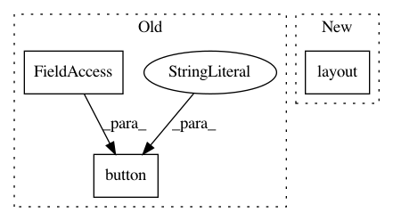

51aa7adbc1371e159afb28b7b42bcec876d1635c,Orange/widgets/visualize/owsieve.py,OWSieveDiagram,__init__,#OWSieveDiagram#,41
Before Change
self.canvasView.setHorizontalScrollBarPolicy(Qt.ScrollBarAlwaysOff)
box = gui.hBox(self.mainArea)
gui.button(box, None, "&Save Graph",
callback=self.save_graph, autoDefault=False)
gui.button(box, None, "&Report",
callback=self.show_report, autoDefault=False)
def sizeHint(self):
After Change
self.canvasView.setHorizontalScrollBarPolicy(Qt.ScrollBarAlwaysOff)
box = gui.hBox(self.mainArea)
box.layout().addWidget(self.graphButton)
box.layout().addWidget(self.report_button)
def sizeHint(self):
In pattern: SUPERPATTERN
Frequency: 4
Non-data size: 3
Instances
Project Name: biolab/orange3
Commit Name: 51aa7adbc1371e159afb28b7b42bcec876d1635c
Time: 2016-04-15
Author: janez.demsar@fri.uni-lj.si
File Name: Orange/widgets/visualize/owsieve.py
Class Name: OWSieveDiagram
Method Name: __init__
Project Name: biolab/orange3
Commit Name: b819aa83fed31e6d287fc60a3280ea8b30a64f0e
Time: 2015-12-11
Author: janez.demsar@fri.uni-lj.si
File Name: Orange/widgets/classify/owclassificationtreegraph.py
Class Name: OWClassificationTreeGraph
Method Name: __init__
Project Name: biolab/orange3
Commit Name: 02d16a304d14d45a70c0ebefd3122a3a94e04a74
Time: 2015-12-12
Author: janez.demsar@fri.uni-lj.si
File Name: Orange/widgets/classify/owclassificationtreegraph.py
Class Name: OWClassificationTreeGraph
Method Name: __init__
Project Name: biolab/orange3
Commit Name: 51aa7adbc1371e159afb28b7b42bcec876d1635c
Time: 2016-04-15
Author: janez.demsar@fri.uni-lj.si
File Name: Orange/widgets/unsupervised/owdistancematrix.py
Class Name: OWDistanceMatrix
Method Name: __init__